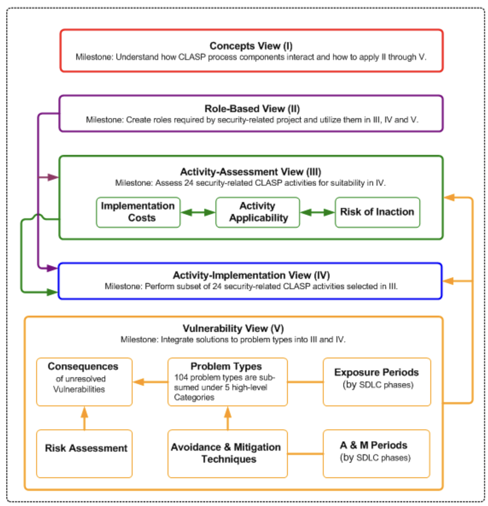
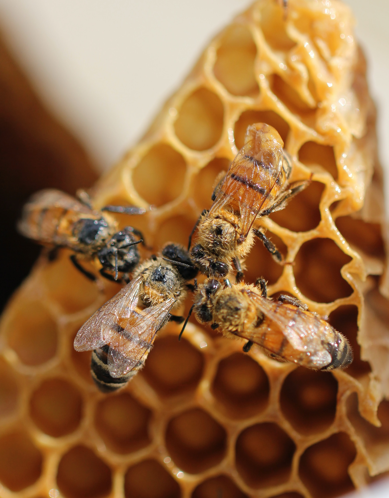
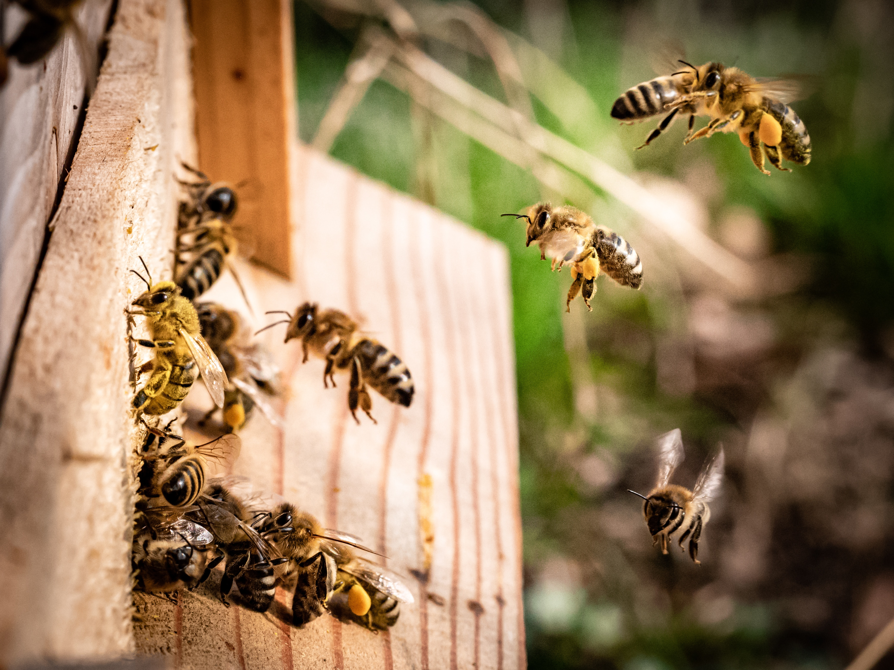

A collection of musings and evolving ideas about security engineering and development practices.
robots.txt
{scheme}://{host}:{port}



--- title: "The Engineering Anthology" subtitle: "A collection of musings and evolving ideas about security engineering and development practices." listing: contents: . fields: [image, date, title, categories, reading-time, description, file-modified] sort: "date desc" type: grid categories: numbered feed: true sort-ui: true filter-ui: true image-placeholder: placeholder.jpg page-layout: full title-block-banner: true citation: false toc: false comments: false ---